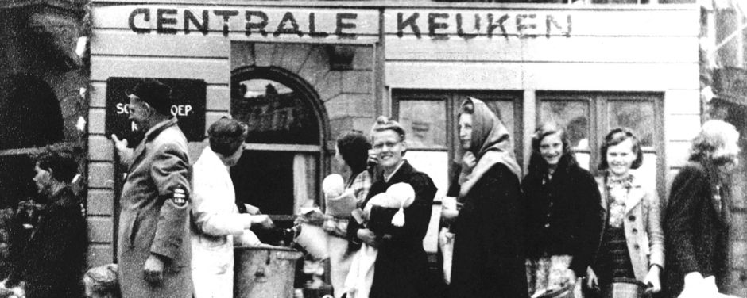

Duizenden hongerige ondoden lopen zielloos over het stationsplein. Op zoek naar voedsel, naar half vergane hondenlijken, naar vers mensenvlees. Het is gekkenwerk dat ik hier ben, maar de brandstof van de bus is op. Ik hoopte dwars door de menigte wandelende lijken heen te kunnen rauzen.Ergens ter hoogte van het gebouw dat ooit
5 Comments
Stijloefeningen (79) – Western
Posted on 11 juli 2011 by Molovich
Een stofwolk ontneemt het zicht op de wegrijdende postkoets, die mij net heeft afgezet voor het station van dit door god verlaten prairydorp. Een tumbleweed tuimelt over het zanderige plein. Het bord van de verlaten saloon piept in de wind die me voortjaagt naar de Public Library. Het geluid van een lucifer.
0 Comments

Stijloefeningen (45) – Hongerwinter
Posted on 6 juli 2011 by Molovich
Mijn voeten en handen heb ik ingezwachteld tegen de kou. Kranten tegen m’n borst. Ik duw een handkar voort waarin mijn zoon vredig ligt te slapen. Centraal Station. De tramrails liggen er kaal bij. Het hout tussen de rails is al lang weggenomen. Ik word geacht het IJ over te steken om in de dorpen.boven Amsterdam mijn gouden trouwring te ruilen tegen groenten en aardappelen
6 Comments
Stijloefeningen (38) – Moe
Posted on 4 juli 2011 by Molovich
De buschauffeur port me wakker. We zijn bij de eindhalte, Centraal Station. Ik stap uit en duw de kinderwagen voort waarin mijn zoon ligt te slapen. Ik wou dat ik hem was. De mensen lopen in zichzelf gekeerd over het plein. De regen doet z’n best mij wakker te houden, maar mijn oogleden voelen zwaar.alsof er een stel verveelde kaboutertjes aan lopen te trekken.